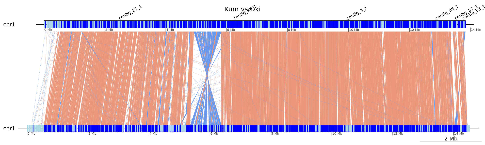
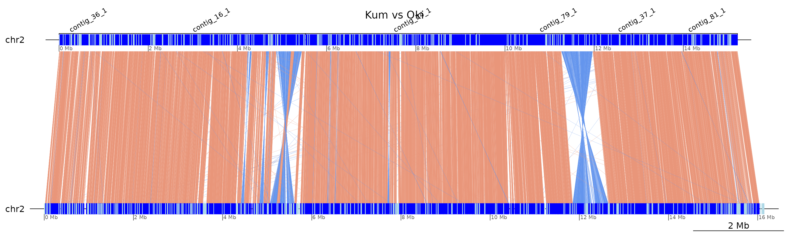
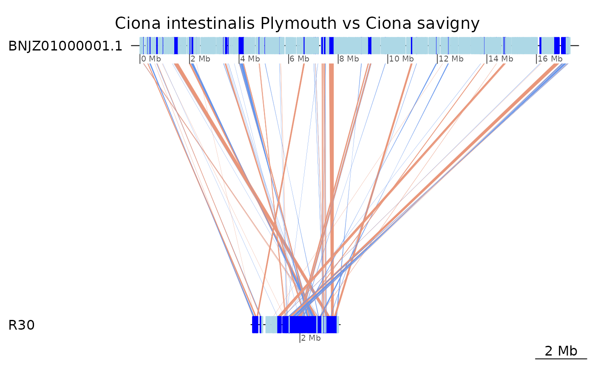

Whole-chromosome parallel plots
Charles Plessy
28 March, 2022
Source:vignettes/ParallelPlots.Rmd
ParallelPlots.Rmd
knitr::opts_chunk$set(cache = TRUE, cache.lazy = FALSE)
knitr::opts_knit$set(verbose = TRUE)Purpose
Pairwise alignments between whole chromosomes are plotted in parallel in order to reflect synteny and the difference of scrambling between short and long arms.
Load R pacakges and data
Load pacakges
library('OikScrambling') |> suppressPackageStartupMessages()
genomes <- OikScrambling:::loadAllGenomes()
load("BreakPoints.Rdata")Phylogenetic cladogram
We assume that the North Pacific and the Atlantic species are more related to each other than to the Okinawan species.
requireNamespace("ade4")
treeLeaf <- function(name, length=NULL) {
if(!is.null(length)) length <- paste0(':', length)
paste0(name, length)
}
treeNode <- function(branch1, branch2, length = NULL) {
if(!is.null(length)) length <- paste0(':', length)
paste0('(', branch1, ',', branch2, ')', length)
}
addRoot <- function(branch) paste0(branch, ";")
tree <-
addRoot(
treeNode(
treeNode( length = 2,
treeLeaf("Okinawa", 1),
treeLeaf("Kume", 1)
),
treeNode( length = 1,
treeNode( length = 1,
treeLeaf("Osaka", 1),
treeLeaf("Aomori", 1)
),
treeNode( length =1,
treeLeaf("Norway", 1),
treeLeaf("Barcelona", 1)
)
)
)
)
plot(ade4::newick2phylog(tree))Genome plots with genoPlotR
Pairs of chromosome 1s.
plotApairOfChrs(coa$Oki_Bar, "chr1", main = "Oki vs Bar")
plotApairOfChrs(coa$Oki_Osa, "chr1", main = "Oki vs Osa")
plotApairOfChrs(coa$Osa_Oki, "Chr1", main = "Osa vs Oki")
plotApairOfChrs(coa$Osa_Bar, "Chr1", main = "Osa vs Bar")
plotApairOfChrs(coa2$Osa_Bar, "Chr1", main = "Osa vs Bar (double-collapsed")
Scaffolding of Kume chromosomes
Chromosome 1
Construction of a GRanges object representing the contigs to merge and whether they have to be reverse-complemented or not.
contigsToMerge <- c("contig_27_1", "contig_90_1", "contig_3_1", "contig_88_1", "contig_87_1", "contig_63_1")
contigsToMerge_start <- c(1, cumsum(seqlengths(coa$Oki_Kum$query)[contigsToMerge])) |> unname() |> head(-1)
contigsToMerge_end <- (cumsum(seqlengths(coa$Oki_Kum$query)[contigsToMerge]) -1) |> unname()
contigsToMerge_oldPos <- GRanges("chr1", IRanges(contigsToMerge_start, contigsToMerge_end))
names(contigsToMerge_oldPos) <- contigsToMerge
strand(contigsToMerge_oldPos) <- c('+', '-', '+', '-', '+', '+')
contigsToMerge_oldPos## GRanges object with 6 ranges and 0 metadata columns:
## seqnames ranges strand
## <Rle> <IRanges> <Rle>
## contig_27_1 chr1 1-4780084 +
## contig_90_1 chr1 4780085-7534138 -
## contig_3_1 chr1 7534139-12219121 +
## contig_88_1 chr1 12219122-13349956 -
## contig_87_1 chr1 13349957-13492925 +
## contig_63_1 chr1 13492926-13839560 +
## -------
## seqinfo: 1 sequence from an unspecified genome; no seqlengthsPlot with coalesced objects
x <- coa$Oki_Kum
x[seqnames(x$query) == "contig_90_1"] <- reverse(query = TRUE, x[seqnames(x$query) == "contig_90_1"])
x[seqnames(x$query) == "contig_88_1"] <- reverse(query = TRUE, x[seqnames(x$query) == "contig_88_1"])
x$query <- mergeSeqLevels(x$query, contigsToMerge, "chr1")
annot <- genoPlotR::annotation(x1=start(contigsToMerge_oldPos), x2=end(contigsToMerge_oldPos), text=names(contigsToMerge_oldPos), rot=30)
plotApairOfChrs(x |> swap(), "chr1", dna_seg_scale=TRUE, main = "Kum vs Oki", annotations = annot)
Plot with double-coalesced objects
x <- coa2$Oki_Kum
x[seqnames(x$query) == "contig_90_1"] <- reverse(query = TRUE, x[seqnames(x$query) == "contig_90_1"])
x[seqnames(x$query) == "contig_88_1"] <- reverse(query = TRUE, x[seqnames(x$query) == "contig_88_1"])
x$query <- mergeSeqLevels(x$query, contigsToMerge, "chr1")
annot <- genoPlotR::annotation(x1=start(contigsToMerge_oldPos), x2=end(contigsToMerge_oldPos), text=names(contigsToMerge_oldPos), rot=30)
plotApairOfChrs(x |> swap(), "chr1", dna_seg_scale=TRUE, main = "Kum vs Oki (double-coalesced)", annotations = annot)
Chromosome 2
Construction of a GRanges object representing the contigs to merge and whether they have to be reverse-complemented or not.
contigsToMerge <- c("contig_36_1", "contig_16_1", "contig_24_1", "contig_79_1", "contig_37_1", "contig_81_1")
contigsToMerge_start <- c(1, cumsum(seqlengths(coa$Oki_Kum$query)[contigsToMerge])) |> unname() |> head(-1)
contigsToMerge_end <- (cumsum(seqlengths(coa$Oki_Kum$query)[contigsToMerge]) -1) |> unname()
contigsToMerge_oldPos <- GRanges("chr2", IRanges(contigsToMerge_start, contigsToMerge_end))
names(contigsToMerge_oldPos) <- contigsToMerge
strand(contigsToMerge_oldPos) <- c('-', '+', '+', '-', '-', '-')
contigsToMerge_oldPos## GRanges object with 6 ranges and 0 metadata columns:
## seqnames ranges strand
## <Rle> <IRanges> <Rle>
## contig_36_1 chr2 1-319811 -
## contig_16_1 chr2 319812-5523357 +
## contig_24_1 chr2 5523358-9335672 +
## contig_79_1 chr2 9335673-12065686 -
## contig_37_1 chr2 12065687-12853372 -
## contig_81_1 chr2 12853373-15214355 -
## -------
## seqinfo: 1 sequence from an unspecified genome; no seqlengthsPlot with coalesced objects
x <- coa$Oki_Kum
x[seqnames(x$query) == "contig_36_1"] <- reverse(query = TRUE, x[seqnames(x$query) == "contig_36_1"])
x[seqnames(x$query) == "contig_81_1"] <- reverse(query = TRUE, x[seqnames(x$query) == "contig_81_1"])
x[seqnames(x$query) == "contig_79_1"] <- reverse(query = TRUE, x[seqnames(x$query) == "contig_79_1"])
x[seqnames(x$query) == "contig_37_1"] <- reverse(query = TRUE, x[seqnames(x$query) == "contig_37_1"])
x$query <- mergeSeqLevels(x$query, contigsToMerge, "chr2")
annot <- genoPlotR::annotation(x1=start(contigsToMerge_oldPos), x2=end(contigsToMerge_oldPos), text=names(contigsToMerge_oldPos), rot=30)
plotApairOfChrs(x |> swap(), "chr2", dna_seg_scale=TRUE, main = "Kum vs Oki", annotations = annot)
Plot with double-coalesced objects
KumChr2 <- coa2$Oki_Kum
KumChr2[seqnames(KumChr2$query) == "contig_36_1"] <- reverse(query = TRUE, KumChr2[seqnames(KumChr2$query) == "contig_36_1"])
KumChr2[seqnames(KumChr2$query) == "contig_81_1"] <- reverse(query = TRUE, KumChr2[seqnames(KumChr2$query) == "contig_81_1"])
KumChr2[seqnames(KumChr2$query) == "contig_79_1"] <- reverse(query = TRUE, KumChr2[seqnames(KumChr2$query) == "contig_79_1"])
KumChr2[seqnames(KumChr2$query) == "contig_37_1"] <- reverse(query = TRUE, KumChr2[seqnames(KumChr2$query) == "contig_37_1"])
KumChr2$query <- mergeSeqLevels(KumChr2$query, contigsToMerge, "chr2")
annot <- genoPlotR::annotation(x1=start(contigsToMerge_oldPos), x2=end(contigsToMerge_oldPos), text=names(contigsToMerge_oldPos), rot=30)
plotApairOfChrs(KumChr2 |> swap(), "chr2", dna_seg_scale=TRUE, main = "Kum vs Oki (double-collapsed)", annotations = annot)
Plot chr2 in three species
We chose chr2 because it has Hox4.
dsList <- list(
OKI = coa$Oki_Osa |> plyranges::filter(seqnames == 'chr2', seqnames(query) == 'Chr2') |> gr2dna_seg(),
OSA = coa$Osa_Bar |> plyranges::filter(seqnames == 'Chr2', seqnames(query) == 'Chr2') |> gr2dna_seg(),
BAR = coa$Bar_Osa |> plyranges::filter(seqnames == 'Chr2', seqnames(query) == 'Chr2') |> gr2dna_seg()
)
compList <- list(
coa$Oki_Osa |> plyranges::filter(seqnames == 'chr2', seqnames(query) == 'Chr2') |> gb2comp(),
Osa_Bar = coa$Osa_Bar |> plyranges::filter(seqnames == 'Chr2', seqnames(query) == 'Chr2') |> gb2comp()
)
genoPlotR::plot_gene_map(dsList, compList, dna_seg_scale=TRUE, tree=ade4::newick2phylog(addRoot(treeNode("OKI", treeNode("OSA", "BAR")))),
main = "Chromosome 2 in three Oikopleura genome assemblies")
Plot chr2 in four species (double-collapsed)
dsList4 <- list(
KUM = KumChr2 |> swap() |> plyranges::filter(seqnames == 'chr2', seqnames(query) == 'chr2') |> gr2dna_seg(),
OKI = KumChr2 |> plyranges::filter(seqnames == 'chr2', seqnames(query) == 'chr2') |> gr2dna_seg(),
OSA = dsList[["OSA"]],
BAR = dsList[["BAR"]]
)
compList4 <- list(
Oki_Kum = KumChr2 |> swap() |> plyranges::filter(seqnames == 'chr2', seqnames(query) == 'chr2') |> gb2comp(),
Oki_Osa = compList[[1]],
Osa_Bar = compList[["Osa_Bar"]]
)
genoPlotR::plot_gene_map(dsList4, compList4, dna_seg_scale = FALSE,
tree = ade4::newick2phylog(addRoot(treeNode(treeNode("OKI", "KUM"), treeNode("OSA", "BAR")))),
main = "Chromosome 2 in four Oikopleura genome assemblies")
Region that is conserved between Osaka and Barcelona
Since Okinawa is the outgroup, let’s look for regions of it that are aligned on both the Osaka and the Barcelona genomes.
x <- subsetByOverlaps(coa2$Oki_Osa, granges(coa2$Oki_Bar)) |> subset(width > 1e5)
y <- subsetByOverlaps(coa2$Oki_Bar, granges(coa2$Oki_Osa)) |> subset(width > 1e5)
findOverlapPairs(x,y)## Pairs object with 4 pairs and 0 metadata columns:
## first second
## <GBreaks> <GBreaks>
## [1] chr2:10664980-10829335:+ chr2:10664980-10828981:+
## [2] chr2:13895789-14003399:- chr2:13895789-14003408:-
## [3] PAR:15193293-15358116:- PAR:15193294-15358116:-
## [4] XSR:10090052-10210973:- XSR:10090052-10210972:-
subsetByOverlaps(coa2$Oki_Osa, gaps(coa2$Oki_Bar)) |> subset(width > 1e5)## GBreaks object with 16 ranges and 6 metadata columns:
## seqnames ranges strand | query Arm
## <Rle> <IRanges> <Rle> | <GRanges> <factor>
## [1] chr2 5825747-5966560 + | Chr2:5465216-5578318 long
## [2] chr2 10361302-10481638 + | Chr2:11648925-11718071 long
## [3] chr2 10664980-10829335 + | Chr2:5679693-5828385 long
## [4] chr2 13895789-14003399 - | Chr2:11294781-11373503 long
## [5] chr2 14726918-14844516 + | Chr2:8440297-8537610 long
## ... ... ... ... . ... ...
## [12] XSR 7236669-7346658 + | XSR:4093395-4195157 XSR
## [13] XSR 7543498-7653200 + | XSR:3606737-3707501 XSR
## [14] XSR 8709632-8820503 + | XSR:7297396-7413239 XSR
## [15] XSR 8929901-9075791 - | XSR:7506741-7641724 XSR
## [16] XSR 10090052-10210973 - | XSR:10484001-10612402 XSR
## rep repOvlp transcripts
## <CharacterList> <integer> <Rle>
## [1] tandem,unknown,rnd,... 5240 g5554.t1;g5556.t1;g5..
## [2] tandem,unknown,rnd,... 11135 g6889.t1;g6890.t1;g6..
## [3] rnd,unknown,LowComplexity,... 5389 g7009.t1;g7010.t1;g7..
## [4] rnd,unknown,tandem,... 6725 g7918.t1;g7922.t1;g7..
## [5] tandem,rnd,unknown,... 9346 g8164.t1;g8165.t1;g8..
## ... ... ... ...
## [12] tandem,rnd,unknown,... 2161 g15405.t1;g15406.t1;..
## [13] tandem,rnd,unknown,... 5241 g15508.t1;g15509.t1;..
## [14] rnd,tandem,LowComplexity 1409 g15864.t1;g15865.t1;..
## [15] unknown,rnd,LowComplexity,... 3812 g15934.t1;g15935.t1;..
## [16] LowComplexity,rnd,tandem,... 1737 g16292.t1;g16293.t1;..
## flag
## <character>
## [1] <NA>
## [2] <NA>
## [3] <NA>
## [4] <NA>
## [5] <NA>
## ... ...
## [12] Tra
## [13] <NA>
## [14] <NA>
## [15] <NA>
## [16] <NA>
## -------
## seqinfo: 19 sequences from OKI2018.I69 genome
ROI <- GRanges("chr2:4686018-4687168") + 1e4 # Hox4
ROI <- GRanges("chr2:14331701-14339427") + 1e4 #Hox1
ROI <- GRanges("chr2:10000000-11000000")
a <- coa$Oki_Osa |> subsetByOverlaps(ROI) |> plyranges::filter(seqnames == 'chr2', seqnames(query) == 'Chr2')
b <- coa$Oki_Bar |> subsetByOverlaps(ROI) |> plyranges::filter(seqnames == 'chr2', seqnames(query) == 'Chr2')
c <- coa$Bar_Osa |> subsetByOverlaps(range(b$query)) |> plyranges::filter(seqnames == 'Chr2', seqnames(query) == 'Chr2')
dsList <- list(
OSA = swap(a) |> gr2dna_seg(),
OKI = a |> gr2dna_seg(),
BAR = swap(b) |> gr2dna_seg(),
Osa = swap(c) |> gr2dna_seg()
)
compList <- list(
a |> swap() |> gb2comp(),
b |> gb2comp(),
c |> gb2comp()
)
genoPlotR::plot_gene_map(dsList, compList, dna_seg_scale=TRUE)Other species
Ciona
plotApairOfChrs(coa2$Ply_Ros, "BNJZ01000001.1", main = "Ciona intestinalis Plymouth vs Roscoff")
plotApairOfChrs(coa2$Ply_Rob, "BNJZ01000001.1", main = "Ciona intestinalis Plymouth vs Ciona robusta")
Unfortunately, C. savignyi’s genome assembly is too fragmented. Here is a plot with the largest fragment.
plotApairOfChrs(coa2$Ply_Sav, "BNJZ01000001.1", main = "Ciona intestinalis Plymouth vs Ciona savigny")
Session information
## R version 4.1.2 (2021-11-01)
## Platform: x86_64-pc-linux-gnu (64-bit)
## Running under: Debian GNU/Linux bookworm/sid
##
## Matrix products: default
## BLAS: /usr/lib/x86_64-linux-gnu/blas/libblas.so.3.10.0
## LAPACK: /usr/lib/x86_64-linux-gnu/lapack/liblapack.so.3.10.0
##
## locale:
## [1] LC_CTYPE=en_GB.UTF-8 LC_NUMERIC=C
## [3] LC_TIME=en_GB.UTF-8 LC_COLLATE=en_GB.UTF-8
## [5] LC_MONETARY=en_GB.UTF-8 LC_MESSAGES=en_GB.UTF-8
## [7] LC_PAPER=en_GB.UTF-8 LC_NAME=C
## [9] LC_ADDRESS=C LC_TELEPHONE=C
## [11] LC_MEASUREMENT=en_GB.UTF-8 LC_IDENTIFICATION=C
##
## attached base packages:
## [1] stats4 stats graphics grDevices utils datasets methods
## [8] base
##
## other attached packages:
## [1] BSgenome.Oidioi.genoscope.OdB3_1.0.0
## [2] BSgenome.Oidioi.OIST.AOM.5.5f_1.0.1
## [3] BSgenome.Oidioi.OIST.KUM.M3.7f_1.0.1
## [4] BSgenome.Oidioi.OIST.Bar2.p4_1.0.1
## [5] BSgenome.Oidioi.OIST.OSKA2016v1.9_1.0.0
## [6] BSgenome.Oidioi.OIST.OKI2018.I69_1.0.1
## [7] OikScrambling_1.0.0
## [8] ggplot2_3.3.5
## [9] GenomicBreaks_0.13.1
## [10] BSgenome_1.62.0
## [11] rtracklayer_1.54.0
## [12] Biostrings_2.62.0
## [13] XVector_0.34.0
## [14] GenomicRanges_1.46.1
## [15] GenomeInfoDb_1.30.1
## [16] IRanges_2.28.0
## [17] S4Vectors_0.32.3
## [18] BiocGenerics_0.40.0
##
## loaded via a namespace (and not attached):
## [1] backports_1.4.1 Hmisc_4.6-0
## [3] systemfonts_1.0.3 plyr_1.8.6
## [5] splines_4.1.2 BiocParallel_1.28.3
## [7] digest_0.6.29 htmltools_0.5.2
## [9] tiff_0.1-11 GO.db_3.14.0
## [11] gdata_2.18.0 fansi_1.0.2
## [13] magrittr_2.0.2 checkmate_2.0.0
## [15] memoise_2.0.1 cluster_2.1.2
## [17] tzdb_0.2.0 readr_2.1.2
## [19] annotate_1.72.0 matrixStats_0.61.0
## [21] R.utils_2.11.0 pkgdown_2.0.2
## [23] jpeg_0.1-9 colorspace_2.0-3
## [25] blob_1.2.2 textshaping_0.3.6
## [27] xfun_0.30 dplyr_1.0.8
## [29] crayon_1.5.0 RCurl_1.98-1.6
## [31] jsonlite_1.8.0 lme4_1.1-28
## [33] survival_3.2-13 glue_1.6.2
## [35] gtable_0.3.0 zlibbioc_1.40.0
## [37] DelayedArray_0.20.0 plyranges_1.14.0
## [39] weights_1.0.4 abind_1.4-5
## [41] scales_1.1.1 DBI_1.1.2
## [43] Rcpp_1.0.8.3 plotrix_3.8-2
## [45] genoPlotR_0.8.11 xtable_1.8-4
## [47] htmlTable_2.4.0 foreign_0.8-81
## [49] bit_4.0.4 Formula_1.2-4
## [51] htmlwidgets_1.5.4 httr_1.4.2
## [53] RColorBrewer_1.1-2 ellipsis_0.3.2
## [55] mice_3.14.0 pkgconfig_2.0.3
## [57] XML_3.99-0.9 R.methodsS3_1.8.1
## [59] nnet_7.3-16 sass_0.4.0
## [61] locfit_1.5-9.5 utf8_1.2.2
## [63] tidyselect_1.1.2 rlang_1.0.2
## [65] reshape2_1.4.4 AnnotationDbi_1.56.2
## [67] munsell_0.5.0 tools_4.1.2
## [69] cachem_1.0.6 cli_3.2.0
## [71] generics_0.1.2 RSQLite_2.2.10
## [73] ade4_1.7-18 broom_0.7.12
## [75] evaluate_0.15 stringr_1.4.0
## [77] fastmap_1.1.0 fftwtools_0.9-11
## [79] yaml_2.3.5 ragg_1.2.1
## [81] knitr_1.37 bit64_4.0.5
## [83] fs_1.5.2 purrr_0.3.4
## [85] heatmaps_1.18.0 KEGGREST_1.34.0
## [87] nlme_3.1-153 R.oo_1.24.0
## [89] poweRlaw_0.70.6 pracma_2.3.8
## [91] compiler_4.1.2 rstudioapi_0.13
## [93] png_0.1-7 tibble_3.1.6
## [95] bslib_0.3.1 stringi_1.7.6
## [97] highr_0.9 desc_1.4.1
## [99] lattice_0.20-45 CNEr_1.30.0
## [101] Matrix_1.4-0 nloptr_1.2.2.3
## [103] vctrs_0.3.8 pillar_1.7.0
## [105] lifecycle_1.0.1 jquerylib_0.1.4
## [107] data.table_1.14.2 bitops_1.0-7
## [109] R6_2.5.1 BiocIO_1.4.0
## [111] latticeExtra_0.6-29 KernSmooth_2.23-20
## [113] gridExtra_2.3 codetools_0.2-18
## [115] boot_1.3-28 gtools_3.9.2
## [117] MASS_7.3-54 assertthat_0.2.1
## [119] SummarizedExperiment_1.24.0 rprojroot_2.0.2
## [121] rjson_0.2.21 withr_2.5.0
## [123] GenomicAlignments_1.30.0 Rsamtools_2.10.0
## [125] GenomeInfoDbData_1.2.7 parallel_4.1.2
## [127] hms_1.1.1 EBImage_4.36.0
## [129] grid_4.1.2 rpart_4.1-15
## [131] minqa_1.2.4 tidyr_1.2.0
## [133] rmarkdown_2.11 MatrixGenerics_1.6.0
## [135] Biobase_2.54.0 base64enc_0.1-3
## [137] restfulr_0.0.13